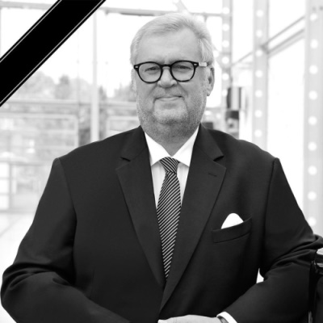
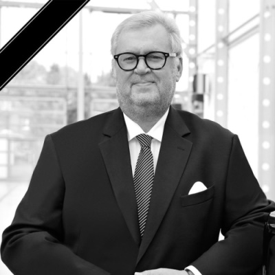
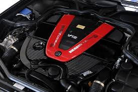
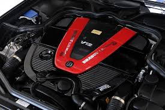

-Brabus is a German car tuner based on the production models of Mercedes-Benz, Smart and Maybach.

-Founded in 1977 by Klaus Brackmann and Bodo Buschmann
 

-The main objective of Brabus is to maximize engine performance through the combined increases in power and the couple.
 

-The company also takes care of the interior and exterior appearance of the cars.


- 384 people work for Brabus